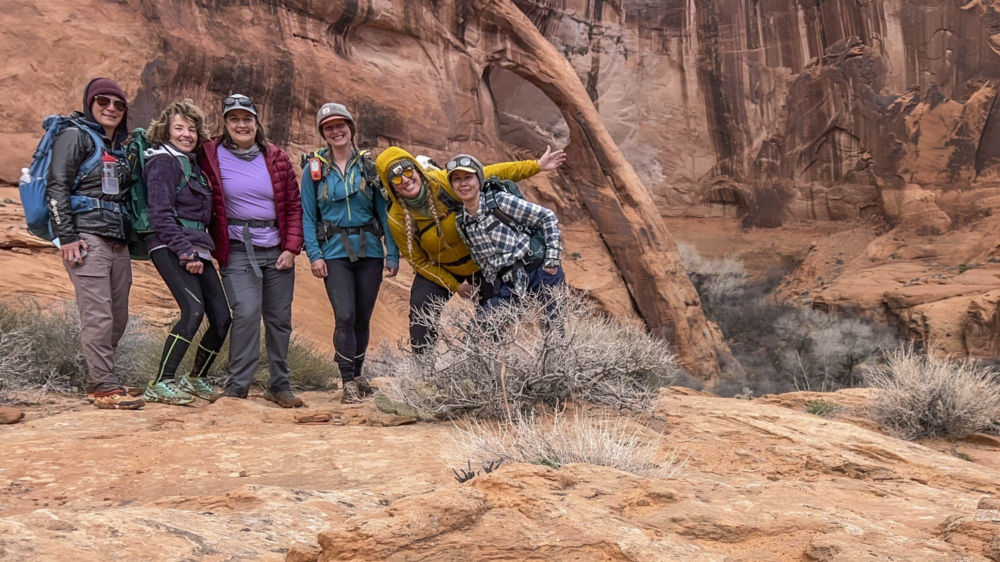
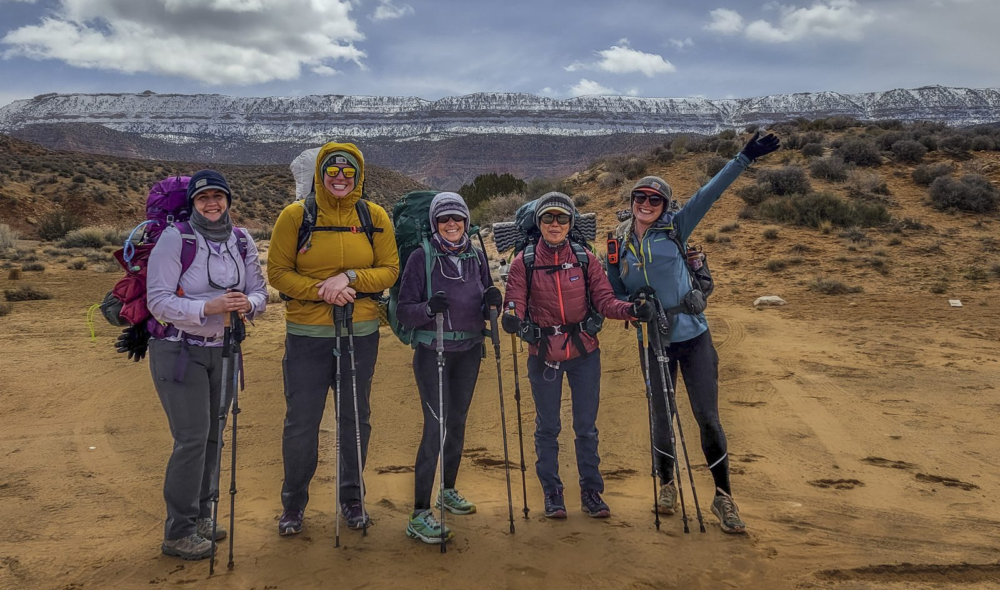
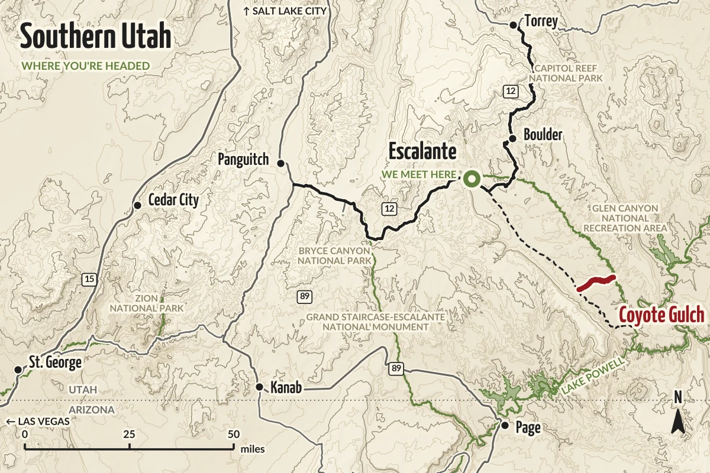
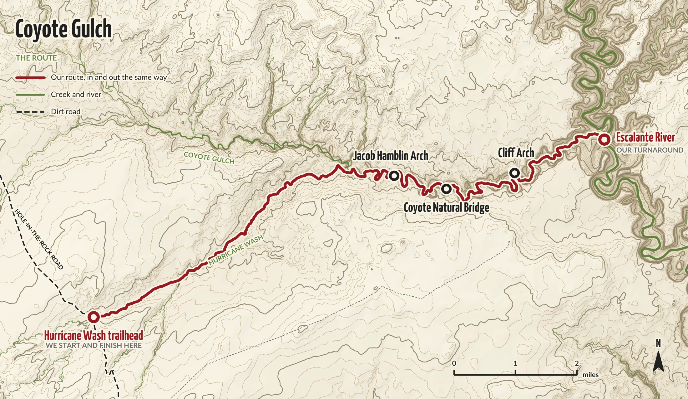
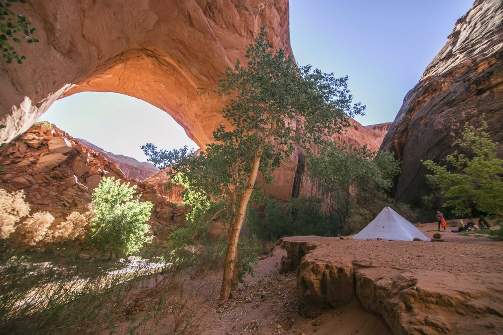
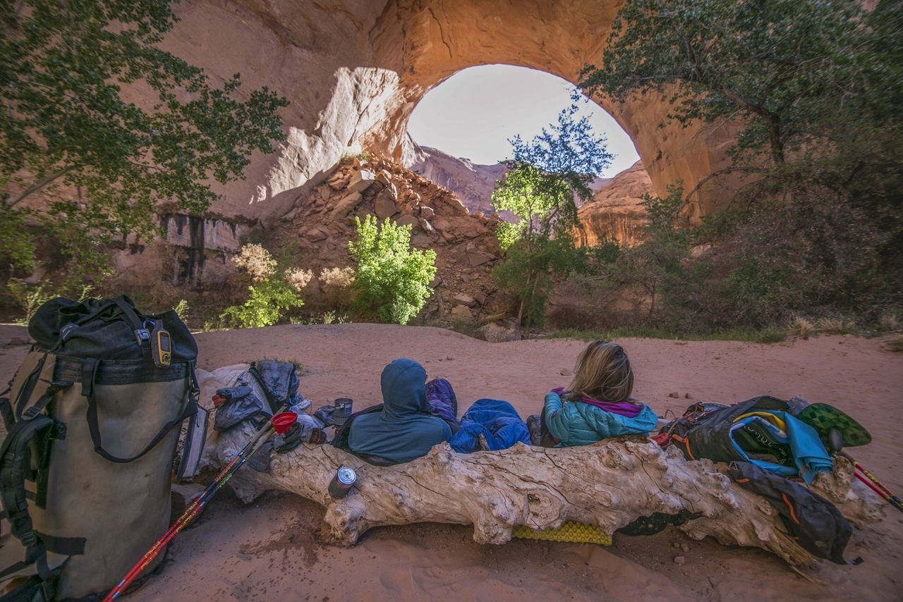

Coyote Gulch is a four-day guided backpacking trip in Grand Staircase-Escalante, in southern Utah. We hike 5 to 8 miles a day down a creek-carved canyon, past Jacob Hamblin Arch, Coyote Natural Bridge and Cliff Arch to the Escalante River, and back out the same way. The trip starts and ends in the town of Escalante and runs in spring and fall. Fit first-time backpackers are welcome.
There's a reason we call it the Crown Jewel of Escalante. Soaring red walls, arches, alcoves, waterfalls and swimming holes, all on moderate miles with very little climbing. The camping is a highlight too. The canyon is full of beautiful places to pitch a tent. As our guides like to say, the reward-to-effort ratio is high on this one.


Is this trip for you?
If you hike regularly and you're in good shape, yes. Motivated first-time backpackers are welcome.
- You'll carry about 35 pounds for four days in a row, 5 to 8 miles a day, on uneven ground. You need good cardio fitness. You don't need backpacking experience.
- You'll walk in water. The route crosses the creek again and again, and in places wading is the only way through. Your shoes will be wet. It's not as bad as it sounds, and we'll help you get ready.
- There's some mild scrambling, so good mobility is a must. Our route has no exposed climbing.
- There's very little elevation change. We go in and come out the same way.
On our own scale of 1 to 10 we call this trip a 4, about the same as Reflection Canyon and Boulder Mail Trail. Want something harder next? Look at Buckskin Gulch and Paria Canyon.
First time carrying a pack overnight? Here's what a first backpacking trip is really like. Still not sure? Call us at (801) 251-6036 and we'll talk it through.
You won't have it to yourself
Truth be told, Coyote Gulch is no secret. In spring and fall you'll share it with other groups. There's still mile after mile of canyon, and there are usually plenty of scenic campsites to choose from.

Where you're headed
Coyote Gulch is a side canyon of the Escalante River in southern Utah's canyon country, between Bryce Canyon, Capitol Reef and Lake Powell.
We meet in the town of Escalante, on Scenic Byway 12. The trailhead is down Hole-in-the-Rock Road, a dirt road that leaves the highway a few miles east of town. From there we walk down Hurricane Wash into Coyote Gulch and follow the creek to the Escalante River.


The trip, day by day
Four days on the trail, with an arrival day before and a departure day after.
In EscalanteOn the trail
- Arrival dayBe in Escalante by 5 pm
We meet at 5 pm for introductions, the gear check and the trip briefing. Around 7 we sit down together for the welcome dinner.
- Trail day 1About 5 miles
Breakfast in Escalante, then the drive down historic Hole-in-the-Rock Road to the Hurricane Wash trailhead. We eat lunch, shoulder our packs, hike about 5 miles and make the first camp.
- Trail day 2*5 to 8 miles
The creek becomes the trail. We follow Coyote Gulch downstream, past Jacob Hamblin Arch, Coyote Natural Bridge and Cliff Arch, toward the Escalante River.
- Trail day 3*5 to 8 miles
We turn around and follow the canyon back the way we came. The views are spectacular in both directions.
- Trail day 4Out to the trailhead
We hike back to the Hurricane Wash trailhead and drive to Escalante. Showers first, then the team celebration dinner.
- Departure dayNothing scheduled
Sleep in, have breakfast and head home when you like.
Come the afternoon before
A rushed start makes for a worse trip, so we ask everyone to be in Escalante by 5 pm on arrival day. The gear check and the welcome dinner are where a group of strangers becomes a team. The celebration dinner on the last evening is part of the trip too, so please don't plan a flight or a long drive that night.


What's included
In the price for every guest
- Experienced backpacking guides, one for every five guests, each a certified Wilderness First Responder
- The 5 pm gear check and briefing, the welcome dinner and the celebration dinner in Escalante
- Breakfasts, light lunches and dinners on the trail, with coffee and tea
- Trailhead transport from and to Escalante
- Overnight permits
- A lightweight tent, unless you'd rather bring your own
- A loaner backpack, sleeping bag and sleeping pad*
- Trekking poles
- Team cooking gear and water purification
- A team first-aid kit and a satellite messenger for emergencies
- Human waste bags. In Coyote Gulch everything gets packed out.
- A trip handbook, a gear list and advice on gear and training before you come
Hotel nights, optional
Add two nights at the team hotel in Escalante: the arrival night and the night of trail day 4. $200* per person sharing a room, which brings the trip to $1,945* in all. A private room costs more*.
We recommend it. The whole team stays under one roof and we handle the booking. Sleeping somewhere else? Just tell us where in Escalante, so we know everyone's in town for the 5 pm gear check.
Not included
- Travel to Escalante
- Personal snacks, and your own bowl, cup and spoon
- Clothing and footwear
- Tips for your guides. $20 to $40 per person per day is typical.
- Sales tax and public land use fees*
How our price compares
Here's what a four-day guided Coyote Gulch trip costs with us and with three other outfitters. These are list prices, read on each outfitter's own page on November 24, 2026.
| Outfitter | List price | Trail days | Per trail day | Hotel nights | Starts from |
|---|---|---|---|---|---|
| Dreamland Safari Tours | $1,745* | 4 | $436* | Optional add-on | Escalante |
| Four Season Guides | $2,025 | 4 | $506 | Not stated | Not stated |
| Wildland Trekking | $2,050 | 4 | $513 | Add-on on request | St. George, a 5-hour drive |
| Backcountry Found | $1,250 | 4 | $313 | Not stated | Escalante |
Own your gear and want the lowest price? Backcountry Found is the leaner choice. We're the full-service choice that starts in Escalante. Compare every route and every outfitter.
What you carry and what you bring
Expect a pack of 35 to 40 pounds. That includes about 5 pounds of team gear, up to three liters of water, your snacks and your share of the food.
- Bottles or a bladder for three liters of water
- Shoes that can get wet: synthetic hiking boots or trail shoes without a waterproof membrane. Here's how to pick shoes for water hiking.
- A down jacket and a rain jacket
- Hiking clothes
- A bowl, a cup and a spoon
- Your favorite snacks
You'll get the full gear list and the trip handbook when you book.

2027 dates
Each departure needs at least four guests and takes ten at most.
| Arrive by 5 pm | On the trail | Depart | Departure | Book |
|---|---|---|---|---|
| Tuesday, April 13* | April 14 to 17 | April 18 | Open to all | Book the departure arriving Tuesday, April 13 |
| Late April* | Date to be set | To be set | Learn to backpack | Tell me the date |
| Tuesday, May 11* | May 12 to 15 | May 16 | Open to all | Book the departure arriving Tuesday, May 11 |
| Monday, June 7 | June 8 to 11 | June 12 | Open to all | Book the departure arriving Monday, June 7 |
| Sunday, September 12* | September 13 to 16 | September 17 | Open to all | Book the departure arriving Sunday, September 12 |
| Friday, October 15* | October 16 to 19 | October 20 | All-women team | Book the departure arriving Friday, October 15 |
What happens after you book
- You pay a 50% deposit to hold your place.
- We send your trip handbook and gear list, and we're here for gear and training questions.
- The balance is due 30 days before departure.
- You meet your guides in Escalante at 5 pm on arrival day.
Want other dates, a shorter itinerary or a private trip for your own group? Call us at (801) 251-6036 or write to hello@dreamlandtours.net.
Who's with you out there
- One guide for every five guests, so a full group of ten walks with two.
- Every guide is a certified Wilderness First Responder and carries a satellite messenger and a team first-aid kit.
- We make the weather calls. Trips run rain or shine unless there's a safety concern.
What Coyote Gulch guests say
Guests have left Dreamland more than 4,800 five-star reviews on TripAdvisor. Here are a few from people who walked Coyote Gulch with us.
"It was one of the best things we have ever done."
- Katie M, October 2025All-women departure, and her first time carrying a pack overnightRead on TripAdvisor
- sam s, October 2025Rerouted to Coyote Gulch after a flash flood closed the original routeRead on TripAdvisor
- Paul H, September 2025A family backpacking tripRead on TripAdvisor
- Kelly M, September 2025Four days in the gulch with beginners in the groupRead on TripAdvisor
- Kim M, June 2025A group of ten, several of them nervous about the desert at the startRead on TripAdvisor
- Keith P, October 2024Four days to the Escalante River, with the welcome dinner and the closing dinnerRead on TripAdvisor
Questions guests ask
What do we eat on the Coyote Gulch trip?
Breakfasts, light lunches and dinners on the trail, with coffee and tea. Expect fresh meals and the occasional freeze-dried backpacker's meal. Tell us about dietary needs ahead of time and we can accommodate many of them. The welcome dinner and the celebration dinner in Escalante are on us too.
Is there a bathroom in Coyote Gulch?
No. There are no outhouses, and all human waste gets packed out. We bring the bags, and your guides walk you through the routine at the gear check.
How do I get to Escalante?
Escalante is a small desert town and public transport is very limited, so most guests drive or rent a car. Flying in and don't want to rent one? Call us. We may be able to help with a carpool or an airport pick-up. There's a safe place to leave your vehicle during the trip.
What happens in bad weather?
Our trips run rain or shine unless there's a safety concern, and we make the weather calls. A reroute for weather or safety isn't a reason for a refund. If we cancel a trip, you get a full refund.
What does it cost to cancel?
If you cancel 91 days or more before departure, your deposit can move to another Dreamland trip within 24 months of booking. Closer in, the fee is 20% of the full trip price at 61 to 90 days, 30% at 31 to 60 days, 40% at 8 to 30 days, 70% from 7 days to 48 hours, and 100% within 48 hours. The full wording is on our policies page.
Do I have to book the hotel through you?
No. The hotel nights are optional. The timing isn't: every guest is in Escalante for the 5 pm gear check on arrival day, and both team dinners are part of your trip either way.
Ready for Coyote Gulch?
From $1,745* per person. Four days on the trail, both team dinners included.
Read before you go
Placeholder: the email course is not built yet
Your first desert backpack, free by email
Six short emails from Dreamland's guides on water, heat, feet, gear and what a day on the trail looks like.